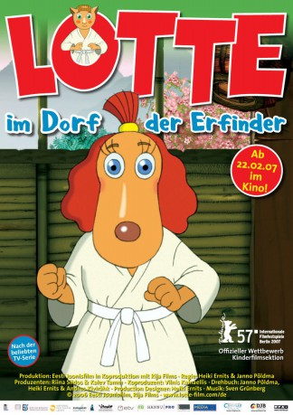

#5582 Lotte aus dem Erfinderdorf
 
 IMDB-Wertung: 7.2 / 10
IMDB-Wertung: 7.2 / 10  Metascore: 0
Metascore: 0 
Lotte ist ein lebhaftes Hundemädchen, mit ihrer Familie und ihrem besten Freund, dem ängstlichen Kater Bruno, wohnt sie in einem kleinen Dorf am Meer. Zusammen erleben sie die spannendsten Abenteuer, sogar nach Japan zu einem Judowettkampf führt es unsere Helden. Die Bewohner des Dorfes haben alle ein ausgefallenes Hobby: Nützliche (und auch weniger nützliche) Dinge zu erfinden, die sie in einem jährlichen Wettbewerb einer Jury vorstellen. Lottes Vater Oskar, der fast jedes Jahr gewinnt, und das Kaninchen Adalbert sind dabei
Jahr: 2006
Dauer: 75 Minuten
FSK:
Land: Estonien Studio: MFA FilmdistributionTonspuren:
Untertitel:
Auflösung: SD (576x320) Größe: 699 MB
Genre: Komödie, Animation/Trick, Familie, Sport
Regisseur: Heiki Ernits, Janno Põldma
Drehbuch: Steve Loter
Soundtrack:
Darsteller:
- Lembit Ulfsak als Oskar
- Evelin Võigemast als Lotte
- Andero Ermel als Bruno
- Argo Aadli als Albert / Theodor
- Garmen Tabor als Anna
- Marko Matvere als Mati
- Piret Kalda als Paula
- Peeter Oja als Adalbert
- Harriet Toompere als Sophie
- Elina Reinold als Susumu
- Mait Malmsten als Jaak
- Margus Tabor als Klaus
- Aarne Üksküla als James
- Peeter Tammearu als John
- Anne Reemann als Helmi
- Ain Lutsepp als Eduard
- Tõnu Kark als Bruno, chief of jury
- Tõnu Oja als Giovanni
- Anu Lamp als Julia
- Tiit Sukk als Väino / Radio wave
- Roman Baskin als Judo judge
- Veiko Tubin als
- Risto Kübar als
- Mari-Liis Lill als
- Sergo Vares als
- Ursula Ratasepp als
- Tõnn Teppart als
- Mihkel Kabel als
- Teelemari Lätti als
- Saara Nüganen als
Datei: X:\Kinder Collections\Lotte\Lotte aus dem Erfinderdorf (2006, FSK, 576x320).avi seit 18.02.2017
Festplatte: Kinder-Filme+Trick
 Alle Filme aus Gruppe 'Kinder Collections\Lotte'
Alle Filme aus Gruppe 'Kinder Collections\Lotte'